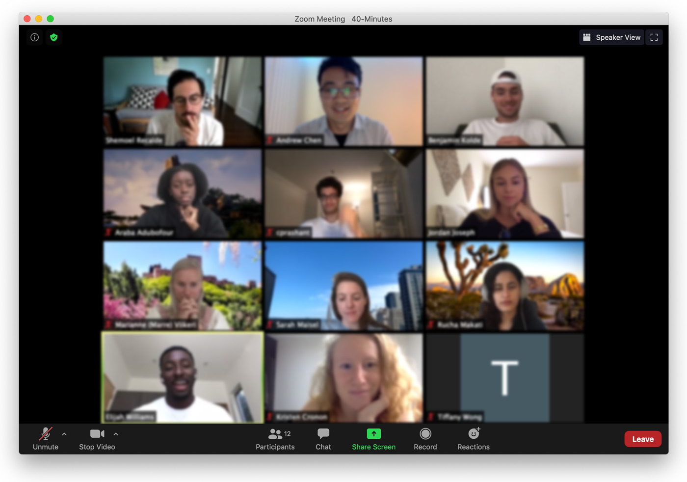
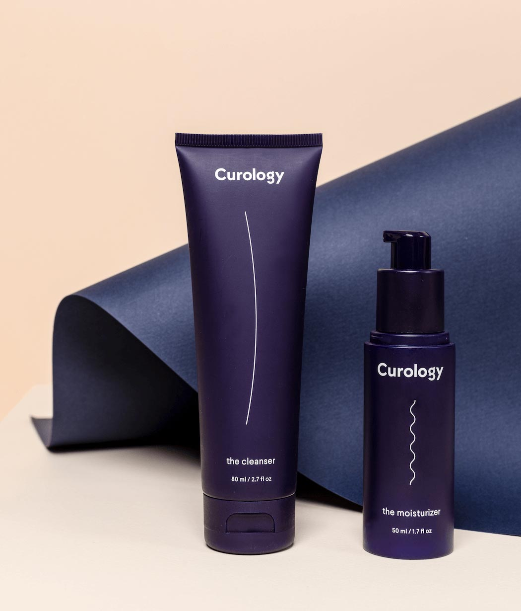
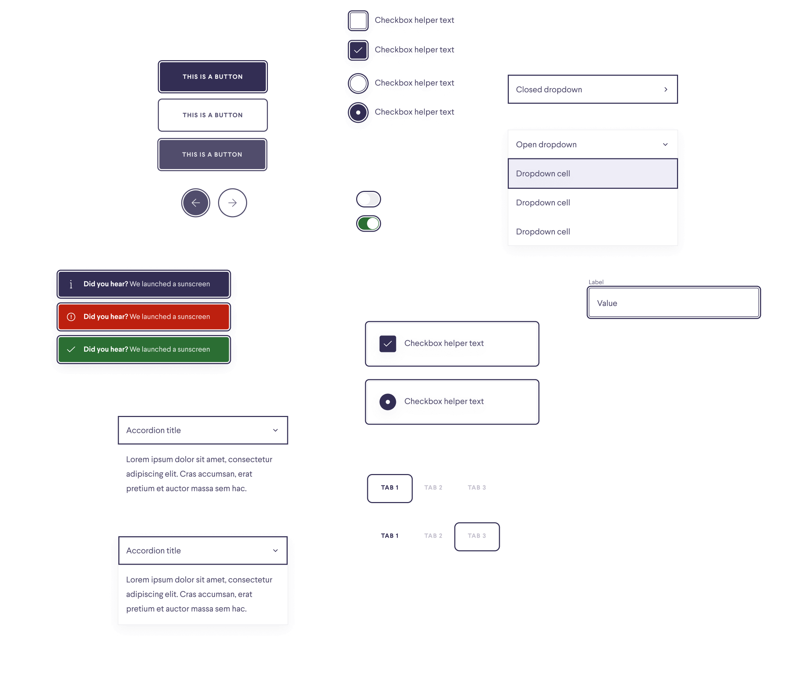
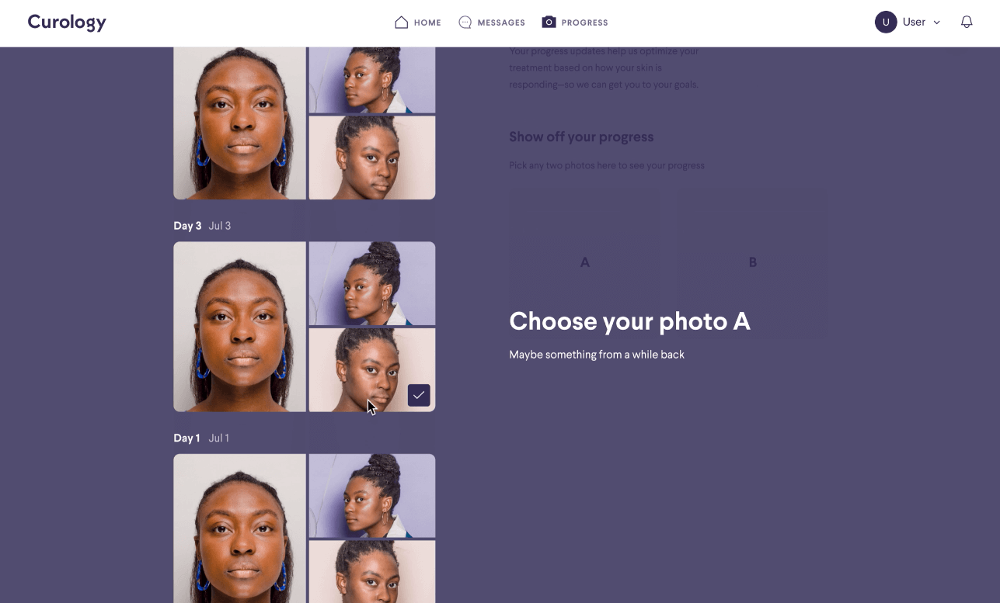

My summer at Curology
Andrew Chen
Intro
This summer, I had the good grace and fortune of working at Curology.
On this page, I briefly go over some of the work I did on the product design team. If you've landed on this page, don't forget to also see my Curology Progress Bundling case study to check out that project in depth.

Documenting and extending the design system
Problem: While Curology has a thorough design system called Radiance, inconsistencies occur when designers detach and resize instances to fit differing content. How might we take advantage of Figma's Auto Layout in our design system to save designers time and maintain consistency?
Impact: I implemented Auto Layout where it makes sense in Curology's Radiance design system in Figma, and worked with the designer leading the design system to get them approved and published. In addition, I wrote documentation and guidance on best practices for using components which helps new team members better ramp up to the design system.
Progress feedback tips
Problem: On the patient side of Progress, it would be nice not just for Patients to be able to log and see their progress, but for us to augment their knowledge and treatment by providing feedback. How might we offer feedback to patients as they log updates?
Impact: By exploring paradigms for offering patients tips and thinking about how the entry and exit points fit into the progress flow, I was able to help my teammate meet important deadlines. I also helped by designing the microanimation of the button.
Sign up flow A/B testing
Problem: While Curology has a healthy customer acquisition strategy, the company loses a certain precentage of users in the sign up questionnaire. How might we test changes in the sign up questionnaire?
Impact: This involved several projects with different PMs. By helping them explore different ways to solve the problem, I was able to help move these projects along toward testing, and if all goes well, they will improve completion rate of our sign up flow.
Web accessibility
Problem: Curology has not previously focused on accessibility due to the constraints of the team. How might we bring our product up to WCAG standards and make accessibility a core part of our practice?
Impact: In addition to speccing design system changes that alleviated the lack of sufficient contrast and focus states, I worked with the principal designer to lead a team workshop on the importance of accessibility and how we as a team can build accessibility into our product development process.
Progress desktop
Problem: While Curology prioritizes mobile, with a growing product design team, there is now more resources to think about desktop. How might we expand the functionality of Progress in a desktop view?
Impact: By exploring different potential features, I helped the team consider and imagine future versions of Progress. I also helped by speccing the barebones v1 of Progress desktop to help the team meet tight deadlines.